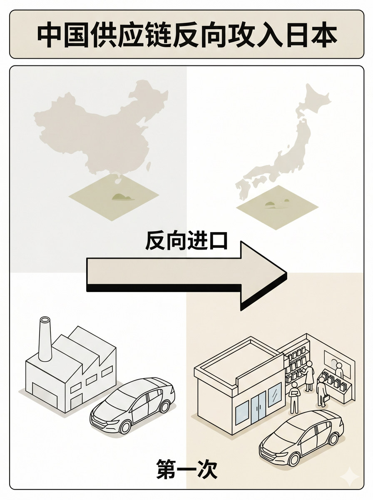
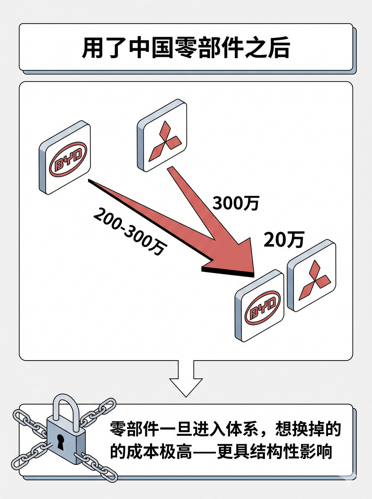

历史 Nano Banana 竖版短视频配图基线：表达反向进口、全球生产网络与日本市场落点之间的方向和逻辑
生成一张 3:4 竖版静态配图。 整体采用顶部标题 + 左中右三区横向结构：左侧场景 + 中部关系区 + 右侧场景。 顶部标题："中国供应链反向攻入日本" 左侧场景区（中国侧）：画工厂建筑简笔，旁边有汽车车型轮廓（Insight），右上角有中国地图轮廓（小面积浅色半透明）。中部关系区：画一个从左到右的粗箭头，箭头上方标注"反向进口"。右侧场景区（日本侧）：画门店/消费者场景，旁边有与左侧相同的车型轮廓，左上角有日本地图轮廓（小面积浅色半透明）。下方统一标注"日本车企第一次把中国制造的车搬回本土"。 关系表达：粗箭头从左到右连接两侧场景，表示反向流动方向。 图中只允许出现这些文字："中国供应链反向攻入日本"、"反向进口"、"第一次"。 地图范围：中国地图轮廓（小面积浅底）和日本地图轮廓（小面积浅底），均抽象简化。不要画成普通的中国对日出口场景，要突出"日本车企自己反向进口"。 不要额外新增文字，不要水印，不要"AI生成"字样，不要品牌官方 logo，不要无意义英文装饰。 整体视觉采用 clean isometric business schematic，modular business illustration with light 3D structural feel，flat illustration，light texture，理性、克制、整齐。

生成一张 3:4 竖版静态配图。 整体采用顶部标题 + 中央价差变化主视觉区 + 底部结论横条的结构。 顶部标题："用了中国零部件之后" 中央主视觉区：左侧显示宽距离，两个品牌符号（BYD 与日系品牌）之间标"200-300万"，右侧显示窄距离，两个品牌符号之间标"20万"，中间用从宽到窄的渐变/收缩箭头连接，表示价差缩窄的趋势。品牌符号为抽象简洁的图形标识。 底部结论横条：锁链符号配文字"零部件一旦进入体系，想换掉的成本极高——更具结构性影响"。 中央与结论之间用向下箭头连接。 图中只允许出现这些文字："用了中国零部件之后"、"200万"、"300万"、"20万"、"更具结构性影响"。 不要额外新增文字，不要水印，不要"AI生成"字样，不要品牌官方 logo，不要无意义英文装饰。 整体视觉采用 clean isometric business schematic，modular business illustration with light 3D structural feel，flat illustration，light texture，理性、克制、整齐。
